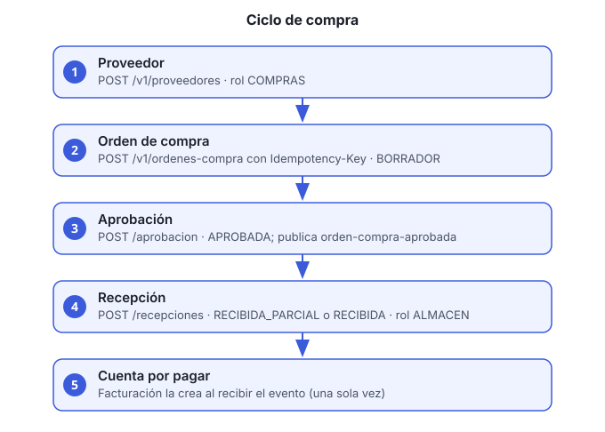

Objetivo: recorrer el ciclo de compra completo: alta del proveedor, orden, aprobación, recepción de mercancía y, al aprobar, la cuenta por pagar que se genera en finanzas.
Servicio: compras-proveedores-ms, con
el gateway como entrada. Todas las rutas van bajo
/compras-proveedores-ms/v1.

Roles
| Paso | Rol requerido |
|---|---|
| Alta de proveedor | COMPRAS |
| Crear orden | COMPRAS |
| Aprobar orden | COMPRAS o DIRECCION |
| Registrar recepción | ALMACEN |
| Cancelar orden | COMPRAS |
| Consultar proveedores | COMPRAS o FINANZAS |
| Consultar órdenes | COMPRAS, ALMACEN o
DIRECCION |
Para todo, usa un access token vigente en el encabezado
Authorization: Bearer ACCESS_TOKEN.
Antes de empezar
- Usuario con el rol que corresponda a cada paso.
- El artículo debe existir en inventario con su SKU.
- Datos del proveedor: razón social, RFC y correo.
Pasos
Da de alta al proveedor (rol
COMPRAS):curl -s -X POST http://HOST/compras-proveedores-ms/v1/proveedores \ -H "Authorization: Bearer ACCESS_TOKEN" -H "Content-Type: application/json" \ -d '{"razonSocial":"Papelería del Centro SA de CV","rfc":"PCE010101AAA","correo":"ventas@proveedor.mx"}'Anota el
idde la respuesta.Crea la orden de compra (rol
COMPRAS). Envía el encabezadoIdempotency-Keycon un valor único por intento. Si la red falla y repites la petición con la misma clave, no se duplica la orden:curl -s -X POST http://HOST/compras-proveedores-ms/v1/ordenes-compra \ -H "Authorization: Bearer ACCESS_TOKEN" -H "Content-Type: application/json" \ -H "Idempotency-Key: $(uuidgen)" \ -d '{"proveedorId":"PROVEEDOR_ID","moneda":"MXN","lineas":[{"articuloSku":"PAP-A4-500","cantidad":10,"precioUnitario":85.00}]}'La orden nace en estado
BORRADOR. Anota suid.Los estados son:
BORRADOR→APROBADA→RECIBIDA_PARCIAL→RECIBIDA, yCANCELADAdesde borrador o aprobada.Consulta la orden para revisar subtotal y estatus:
curl -s http://HOST/compras-proveedores-ms/v1/ordenes-compra/ORDEN_ID \ -H "Authorization: Bearer ACCESS_TOKEN"Aprueba la orden (rol
COMPRASoDIRECCION):curl -s -X POST http://HOST/compras-proveedores-ms/v1/ordenes-compra/ORDEN_ID/aprobacion \ -H "Authorization: Bearer ACCESS_TOKEN"Al aprobarse, la orden publica el evento
orden-compra-aprobada. Facturación y pagos crea entonces la cuenta por pagar de la orden. Esa cuenta se crea una sola vez aunque el evento llegue dos veces. Ver la guía 7.Envía la mercancía y registra la recepción (rol
ALMACEN). Indica la cantidad recibida por SKU:curl -s -X POST http://HOST/compras-proveedores-ms/v1/ordenes-compra/ORDEN_ID/recepciones \ -H "Authorization: Bearer ACCESS_TOKEN" -H "Content-Type: application/json" \ -d '{"lineas":[{"articuloSku":"PAP-A4-500","cantidad":10}]}'Puedes registrar recepciones parciales: la orden pasa a
RECIBIDA_PARCIALy la respuesta muestracantidadRecibidapor línea frente acantidadOrdenada. Cuando todas las líneas quedan completas, pasa aRECIBIDA.Cancela la orden si ya no procede (rol
COMPRAS). Debe llevar motivo:curl -s -X POST http://HOST/compras-proveedores-ms/v1/ordenes-compra/ORDEN_ID/cancelacion \ -H "Authorization: Bearer ACCESS_TOKEN" -H "Content-Type: application/json" \ -d '{"motivo":"El proveedor no pudo surtir"}'
Verificación
GET /ordenes-compra/ORDEN_IDmuestra el estatus aprobada y, al final de la recepción, las cantidades recibidas.- En facturación y pagos (guía 7), la cuenta por pagar existe con el total de la orden.
Problemas comunes
| Síntoma | Causa | Qué hacer |
|---|---|---|
| 403 al crear la orden | El usuario no tiene rol COMPRAS |
Pide el rol al administrador (guía 5) |
| Se creó dos veces la misma orden | Se repitió la petición con otra Idempotency-Key |
Usa la misma clave al reintentar |
| No aparece la cuenta por pagar | El evento aún no llegó | Espera unos segundos y consulta de nuevo; si no aparece, revisa los
logs de facturacion-pagos-ms y de Kafka |
| Error de SKU | El artículo no existe en inventario | Da de alta el artículo en
inventario-operaciones-ms |